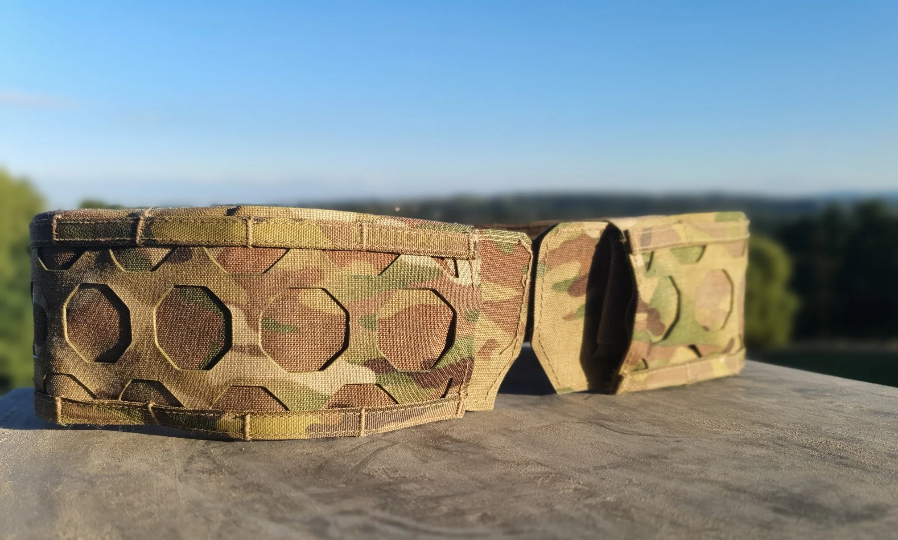
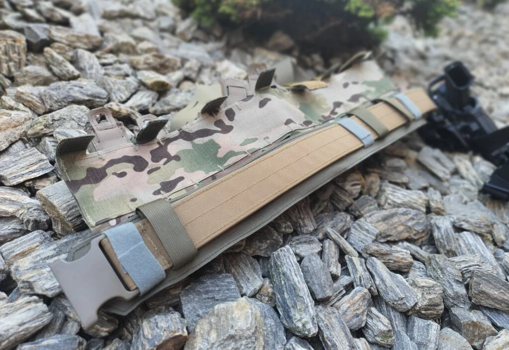

OctamolleSzyte lokalniePas Alpha — zestaw z pasem wewnętrznym
Baza konfiguracji GFT Synergy: pas zewnętrzny z panelem Octamolle + pas wewnętrzny.
689 zł z VAT
Zobacz produkt →
Kategoria / Pasy
Pasy taktyczne i wewnętrzne do konfiguracji oporządzenia. Dwuczęściowa architektura: pas wewnętrzny nosisz w spodniach, nakładkę z panelem Octamolle scalasz w ~60 sekund.

OctamolleSzyte lokalnieBaza konfiguracji GFT Synergy: pas zewnętrzny z panelem Octamolle + pas wewnętrzny.

Alpha compatibleNiskoprofilowy pas wewnętrzny z rzepem scalającym — nosisz go w szlufkach spodni.
 Szyte lokalnie
Szyte lokalniePas nośny dostępny z dwiema różnymi klamrami Cobra — do pracy bez nakładki.
Dobór konfiguracji
Zestaw Alpha to komplet na start: pas wewnętrzny + zewnętrzny z panelem Octamolle. Pas nośny z klamrą Cobra wybierz, jeśli budujesz konfigurację bez nakładki. Pas wewnętrzny dokupisz jako drugi — np. do spodni roboczych i treningowych osobno.
System / Octamolle
Panel Octamolle jest w pełni zgodny ze standardem MOLLE/PALS — a dodatkowo pozwala na montaż pod kątem bez adapterów.